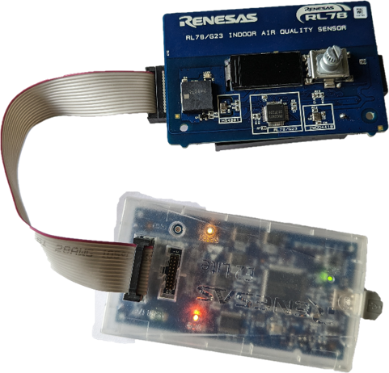
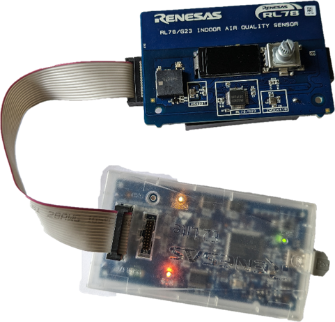
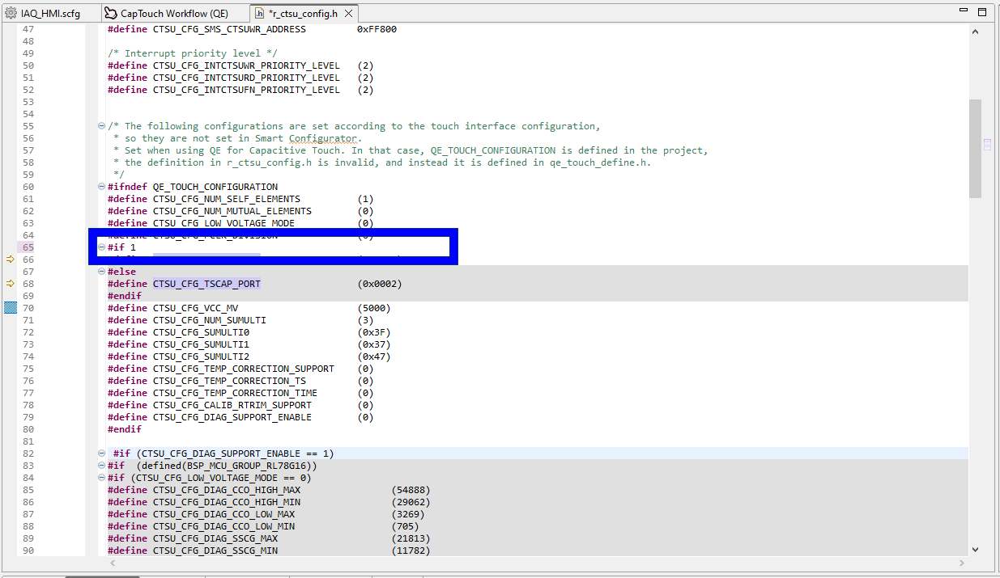
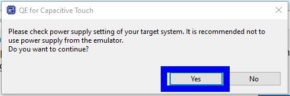

Here we will guide you through the setup and tuning of the capactive touch application using the Renesas QE tools.
4.1 Open QE Workflow
First we need to open the QE workflow, a view which guides you through the process of
setting up a capactive touch project with QE tools. This is the foundation of a Renesas
Capacitive Touch Application.
Please perform the following:
Renesas Views → Renesas QE → CapTouch Workflow (QE)
In the event the window opens somewhere difficult to view, simply click and drag the tab
into the central view.

4.2 Select Project
In the Select a Project within 1.Preparation use the dropdown to select the project we have just created.

4.3 Prepare Configuration
In the Prepare a Configuration within 1.Preparation use the dropdown to Create a new
configuration.
Within the dialog perform the following:
- Select (click once) the Button object and place (click once) somewhere in the configuration area
- Press [Esc] to stop placing buttons
- Double click the button to configure it
- Use the drop down to set the TS electrode pin to TS25
- Click OK
- Click Create to finish creating the configuration

4.4 Hardware
Before debugging/tuning the project, please ensure headers are fitted to the header H1 in
positions 1-2
(VBATT-VDD) & 4-5 (VDD_RL78 - VDD).
Finally connect the E2-Lite - the user does not need to connect batteries for this lab as we will supply
the board via the debugger.
G22:
J15 open
J16 shorted
J17 2-3
If populated:
J12, J13, J14 2-3
 

4.5 Source Modification
A bug has been introduced in the drivers since adding support of new RL78 devices, to workaround this bug
we have to do the following.
Navigate to:
[Project] → src → smc_gen → r_config →
r_ctsu_config.h
and replace line 65 contents:
#if (defined(BSP_MCU_GROUP_RL78G22) || defined(BSP_MCU_GROUP_RL78G23))#if 1To:
And save with [Ctrl] + S
4.6 Debug Configuration Modification
A bug has been introduced in the drivers since adding support of new RL78 devices, to workaround this bug
we have to do the following.
[Right-Click Project] → Debug As → Debug Configurations
Then inside the dialog select the hardware debug configuration of your project and:
Debugger tab → Debug Tool Settings sub-tab
Set "Allow to access by stopping execution while running" to "Yes".
G22 - Select COM port.

4.7 Start Tuning (Emulator)
Now return to the initial tuning screen and start tuning.
The tuning process is central to the QE for Capacitive touch tools - it is during this process the
perihperal is
configured to work according to the physical hardware connected, i.e, the electrodes.
As well as setting up the peripheral features such as scan times, frequencies and drive currents - which
are all
done automatically for us - we will set an initial proximity/touch threshold.
In the Start Tuning (Emulator) within 2.Tuning Touch Sensors and select Start
Tuning.
Click yes when the dialog appears asking you to acknowledge the non-ideal powersupply of the E2-Lite.
Now follow the on screen insrtuctions, when confronted with the sensitivtity tuning (Step 5/6)
move your hand near the sensor (within ~3CM) and notice how the counter value increases,
press any key on the keyboard while your hand is within proximity.
Examples below are given for non-touch and touch counts respectively.


After pressing the key, you will be asked if you would like to continue the tuning process, please do so.

4.8 Output Parameter Files
Now the tuning has been performed, we need to extract the data which has been computed into useful
.c and .h files for use in our drivers and middleware.
To do this, navigate to Output Parameter Files within 2.Tuning Touch Sensors and select
Output Parameter Files.

4.9 Implement Program
Finally to simplify application creation, the QE tools can generate a simple sample applicaiton for
us.
To do this, navigate to Implement Program within 3.Coding and select Show
Sample
Inside the dialog that appears, select Output to a file - this outputs the sample .c file we will
reference later.